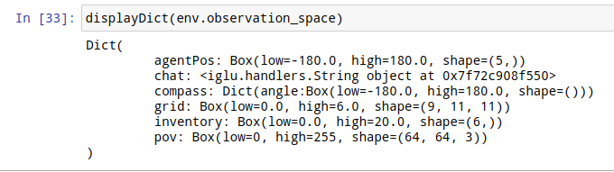
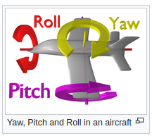
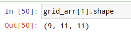
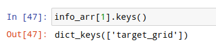
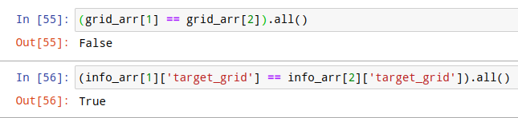
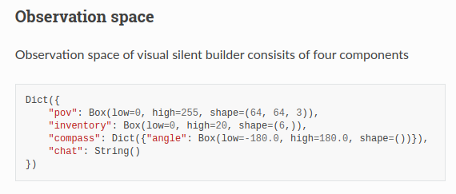
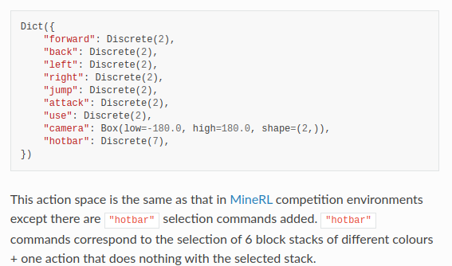
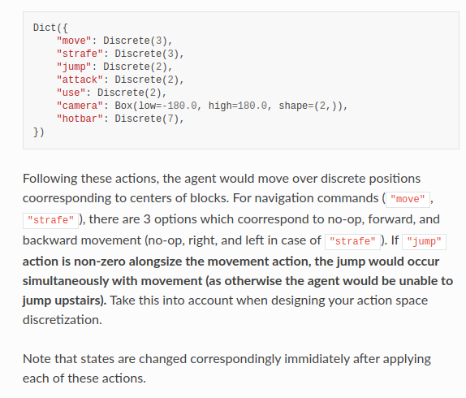
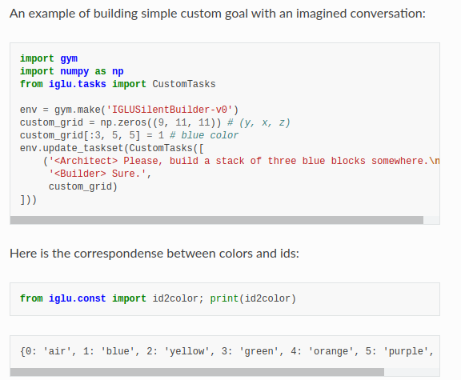
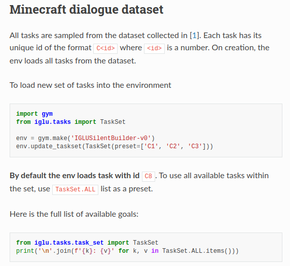

--- DON'T MODIFY THIS LINE ---
[TOC]
TODO List#
the IGLU environment#
observation space#

agentPos: is described by 5 numbers which are
- x coordinate,
- y coordinate,
- z coordinate,
- pitch angle (head)
- yaw angles (head)

chat : String(): represents the conversation between the architect and the builder acquired from human-human interaction which corresponds to the current task
compass: from -180 to +180 no information about the global direction inside the image, so this is extra info obtained
grid: contains block ids of voxel grid captured from the building zone. Id -1 corresponds to air block and the rest of them are ordered as in the "inventory" observation.

inventory: Box(low=0, high=20, shape=(6,)), six block stacks in agent’s bag: blue, yellow, green, orange, purple, red, each has 20.
pov : 64 x 64 RGB first-person view image of the agent
target_grid in info:

NOTE: the grids info keeps changing as the agent would add more stuffs on it
the target_grid however does not change because our target is fixed for a given task

During the evaluation, the observation space will be limited

Action space#
the environment can be customised with three different action spaces.
human-level actions

discrete coordinate actions

Looks like the human action space is more stable.
Task class#
when run code env.reset(), the environment will sample new task from the current task set and make it active.
we can control the set task using the corresponding classes
RandomTasks, TaskSet, CustomTasks
Random tasks
each goal will have an empty string inside its “chat”
the task are generated randomly.
To use random tasks with the environment, you should call .update_taskset method.
import gym
from iglu.tasks import RandomTasks
env = gym.make('IGLUSilentBuilder-v0')
env.update_taskset(RandomTasks(max_blocks=3, max_dist=5, num_colors=3))
for episode in range(10):
# for each reset call there will be a completely new target
obs = env.reset()
done = False
while not done:
action = env.action_space.sample()
obs, reward, done, info = env.step(action)
Custom Tasks
Each task should contain a conversation between the architect and the builder.
BUT, there is no need to specify intermediate step, only the final structure is required.
(We actually might need intermediate steps for training the model because eventually this is an interactive task)

Minecraft dialogue dataset (a.k.a. TaskSet)

Paper Reading Notes#